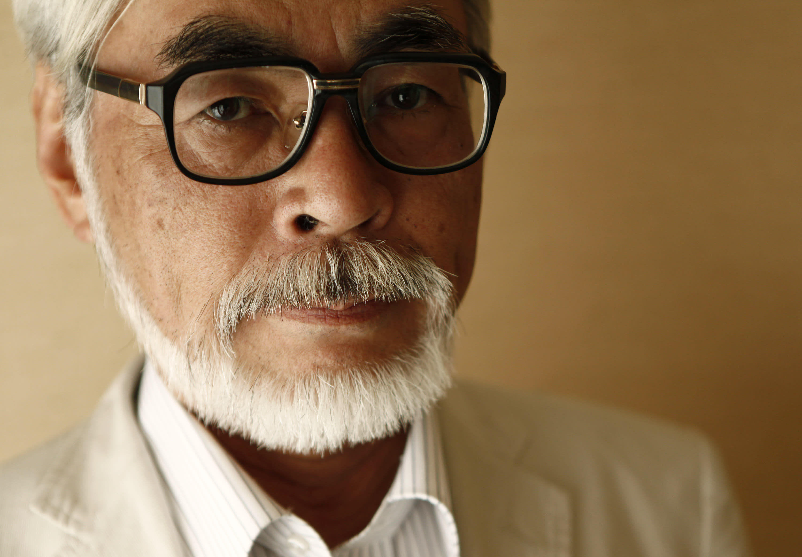
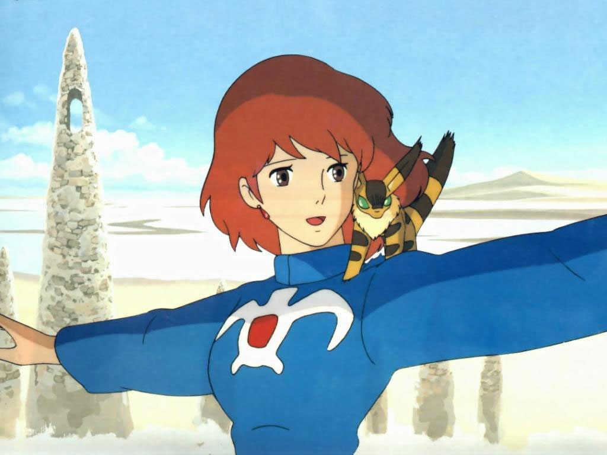
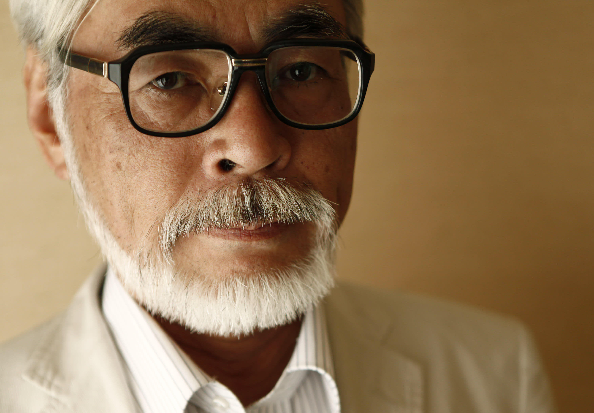
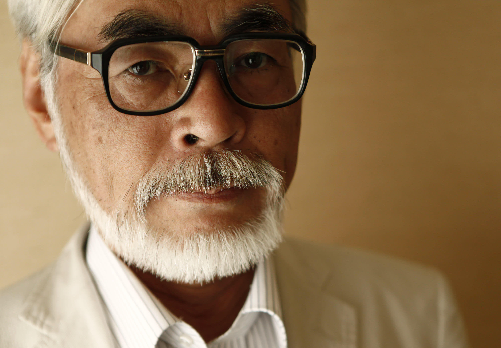
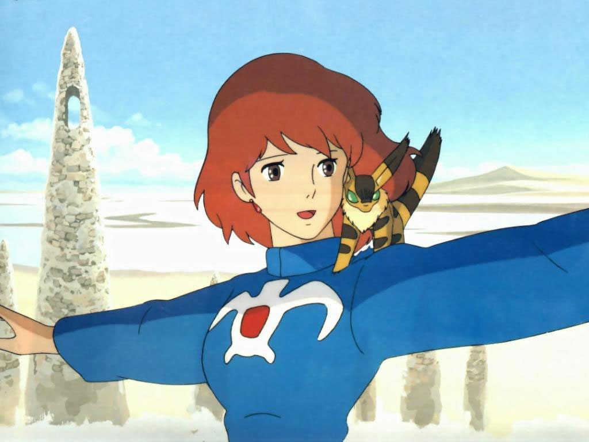
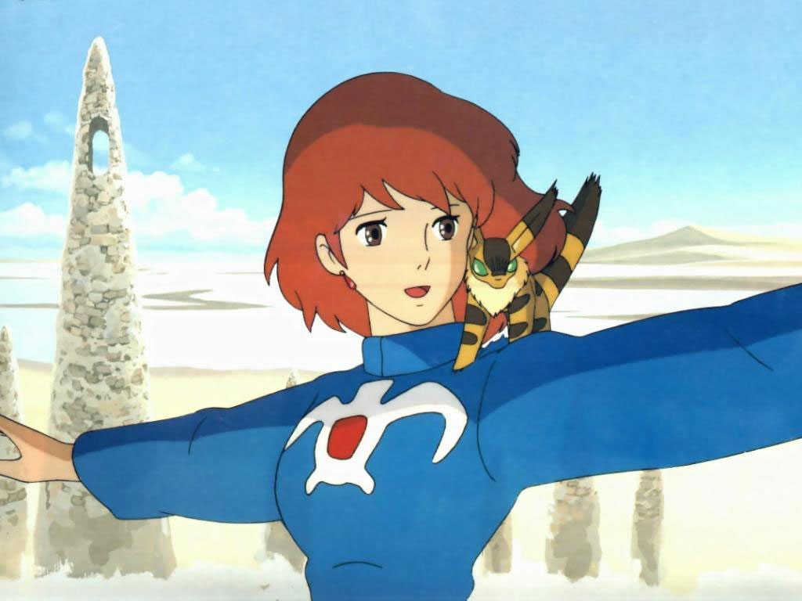

Tout commence pendant la Seconde Guerre mondiale : les Américains bombardent le Japon, des
villes se font raser de la carte, et les habitants sont obligés de quitter leur maison. Parmi ces gens,
on retrouve deux personnes, une petite fille pied nu et son grand frère, un des co-fondateurs du studio
le plus important d'animation. Ce fameux grand frère, c'est Isao Takahata
(né peu avant la guerre, dans une famille assez pauvre).
Quelques années plus tard, le Japon se reconstruit, et ce dernier rentre à l'université de Tokyo, il y
étudie la littérature française, car on excelle dans l'écriture réaliste. Et Takahata adore la
littérature réaliste, et l'animation.
Pour donner un peu plus de contexte, on se situe dans les années 50, et Disney avait déjà sortit une
vingtaine de longs-métrages d'animation dans le monde entier. Permettant ainsi à Isao de grandir avec
l'univers de l'animation. Parmis ces dessins animés, on retrouve
le roi et l'oiseau de Paul Grimault,
qu'il va découvrir à 21 ans.
3 ans plus tard, il va intégrer le studio d'animation japonais : la TOEI. Il sera
d'abord employé comme
balayeur, ensuite, il va devenir assistant, puis il va réaliser sa première série d'animation : Ken,
l'enfant loup.
Ça y est, il a trouvé sa voie : il aime l'animation, mais il aime aussi les animateurs et animatrices.
En plus de réaliser, il devient le vice-président du syndicat des animateurs chez la TOEI. Au milieu des
années 60, les employés de la TOEI font grève, et Isao va être à la tête de cette grève. C'est pendant
cette manifestation qu'il va rencontrer un autre animateur, un nouveau chez la TOEI : Hayao
Miyazaki.
HAYAO MIYAZAKI (1941)

Miyazaki est né pendant la Seconde Guerre mondiale, dans un japon dévasté, et dans une
famille plutôt bourgeoise. Son père et son oncle dirigent ensemble une entreprise familiale Miyazaki
airplane, ils produisent des gouvernes d'avions pour des avions de chasse de la Seconde Guerre mondiale.
Depuis petit, Miyazaki est en admiration, mais il est moins enthousiaste de ce que produit son père.
Son enfance est plus plutôt rude, il se retrouve avec des problèmes de santé, selon les médecins, il
devait vivre jusqu'à ses 20 ans. Toute cette situation va l'amener à s'isoler. De plus, sa mère va
tomber malade quand il va avoir 6 ans. Il va donc essayer de combler son manque d'amour maternel autre
part : par la littérature imaginaire et les mangas. Il est inspiré par le mangaka Osamu
Tezuka. À 17
ans, il va voir au cinéma son premier film d'animation : le serpent blanc.
Tout comme Takahata, il a trouvé sa voie.
Il va réaliser son premier long-métrage : le château de Cagliostro : le protagoniste est un
cambrioleur
astucieux qui va s'infiltrer dans la principauté de Cagliostro. Dans ce film, on découvre l'élégance de
Miyazaki, son détail dans le réalisme, et de la fluidité. C'est une animation japonaise dans un décor
européen. Au final, le long-métrage ne sera pas un succès. Mais il ne baisse pas les bras, et va aller
contacter plusieurs studio d'animations avec beaucoup d'idées qui vont être refusées. Mais grâce à un
journaliste Tohio Suzuki, il va réussir à publier son long-métrage. Tohio écrit pour Animage, un
magazine spécialisé dans l'animation et les mangas. Il va publier un article sur Miyazaki. Grâce à son
supérieur, ils vont réaliser un long-métrage, mais à une condition, ils doivent d'abord publier un manga
et voir s'ils attirent assez de lecteurs, ensuite, ils pourront publier le film. Donc, ils vont d'abord
publier un manga dans Animage, et ils remarquent que le manga a du succès, ils vont donc publier le
long-métrage.
Nausicaä de la Vallée du Vent

Dans les années 90, Miyazaki va concevoir un manga épic, écologiste et poétique, et
comme prévu, c'est un succès, ils vont donc produire le long-métrage, sauf qu'il faut un producteur qui
puisse s'occuper de la production, Miyazaki va donc choisir Takahata. Mais Isao va refuser, sauf que
Miyazaki veut à tout prix que Takahata soit le producteur, donc ils vont aller le supplier en utilisant
des arguments écologique, et cette fois-ci, il va accepter. Takahata va d'abord commencer par engager un
studio d'animation TOPCRAFT, et un compositeur, Joe Hisaishi.
Malheureusement, c'est pendant la
production de ce film que la mère de Miyazaki va décéder, ce qui va pousser ce dernier à se plonger
entièrement dans son travail.
Début des années 80, et Nausicaä sort au cinéma. Et comme attendu, c'est un succès sans précédent, et
d'ailleurs le premier succès de Miyazaki. On est dans un monde postapocalyptique, et Nausicaä est la
princesse de la vallée du vent, elle lutte pour la coexistence pacifique. On retrouve ici le thème de
l'écologie, de la guerre, et de l'aviation, avec des personnages complexes, une héroïne moderne.
Nausicaä a du succès au Japon, mais le succès ne va pas encore dépasser les frontières. Au final, le
film va sortir en Amérique sous le nom de Warrior of the wind, mais le film a été découpés au montage,
les dialogues ont été modifiés… Au fur et à mesure, le film commence à avoir son succès, tout le monde y
gagne, sauf le studio d'animation, qui va faire faillite. Takahata et Miyazaki décident d'aider le
studio en fondant un studio, et en récupérant les meilleurs notamment Mishyo Yasuda.

 

 
